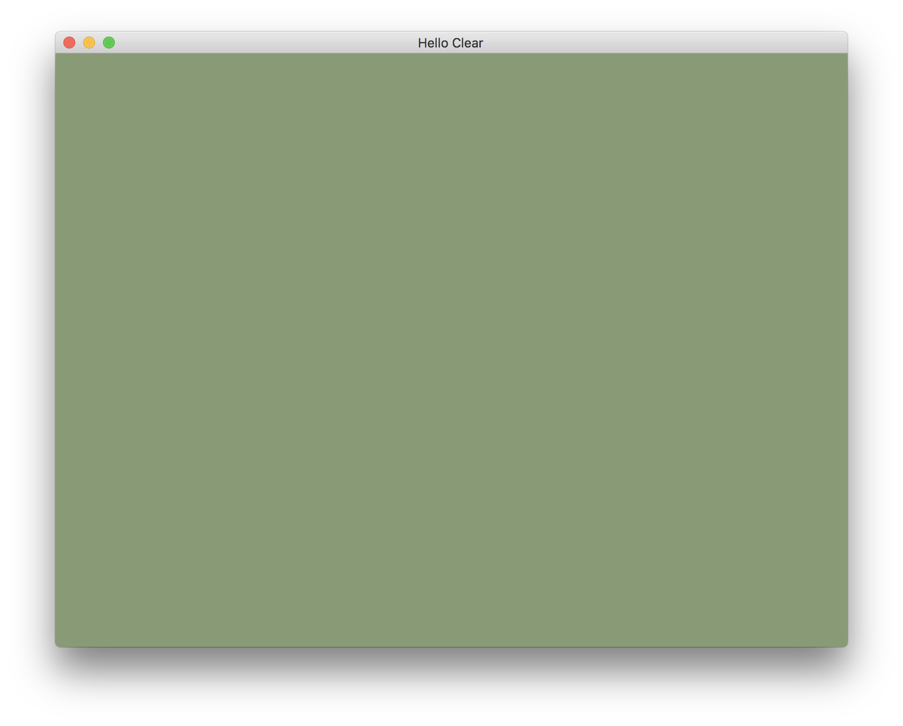

Clearing The Window
Once you have a window open, the usual next step for a graphics tutorial is to draw "your first triangle". You see, the fundamental primitive of 3d graphics is the triangle. Yes, there are some systems such as the Sega Saturn that use quads instead, but in all the modern systems you'll find it's going to be triangles. Even a quad is just two triangles, when you think about it. With enough math and enough parallel processing you can do anything you want with triangles.
- Skyrim? Triangles.
- Breath of The Wild? Has a few more triangles than Skyrim.
- Super Smash Bros? Just a whole lot of triangles.
We'll be covering triangles quite a bit. However, in the context of gfx-hal,
which is like 97% "whatever Vulkan does", even if you're not using the Vulkan
backend, there's a great many steps of setup involved between "a window that
draws nothing" and "a window that draws one triangle".
In fact the official gfx-hal docs specifically give us a warning about this. The top level docs are so short I can include all three sentences right here for dramatic effect:
Low-level graphics abstraction for Rust. Mostly operates on data, not types. Designed for use by libraries and higher-level abstractions only.
There are basically no defaults provided. We have to list out every single little step of the entire configuration process. I mean they convert C types into Rust types for us, but it's still very "do it yourself". That's cool if you actually care about defining it all (which you will some day, I'm sure, or you wouldn't be reading this right now), but it's also long when you're starting out and want to get something on the screen.
Since going all the way to "drawing a triangle" might end up feeling like too
much at once, we'll stop this lesson at an intermediate step. Remember how our
winit window from last lesson didn't refresh itself properly? We can fix just
that much and then stop there. That alone will cover a surprising amount of
ground.
To be absolutely clear: PLEASE understand that this is a whirlwind tour of many corners of the whole process all at once. Since so much needs to be set up before you can draw anything, quite a bit gets skimmed over simply so that we can talk about all the parts. As it is, this lesson is still more than 10,000 words long. Future lessons will review different elements of what gets built here, and I promise that it makes sense the more you stick with it.
Outline Our Target API
So, in the first lesson we had WinitState and it just had two public fields.
There's not much there, it's all safe code, and it's not the focus of our
lessons, so that's fine. I mean I guess you could pair up the wrong EventLoop
with the wrong Window or something, but two public fields is good enough.
With gfx-hal it is wildly the opposite situation. We're going to be juggling
a dozen or more things at once, and most of them are very unsafe things that
must be handled with extreme care. gfx-hal, at its core, is about directing a
pile of DMA units and a hyper-SIMD co-processor with all safety checks left in
"up to you" mode. That's about as unsafe as it gets. Not only do we want a
HalState type, we want to expose nothing that's inside of it, because it's
all a giant pile of sharp and dangerous things. We want to wrap all that up,
then offer a very small, well curated, semantically meaningful set of operations
that the outside world can access.
Sure sounds like API Design. There's so much that could be said about API design. Let's keep it short:
- Always, Always, Always write the usage code first.
Even before we know any details about how gfx-hal works, we're going to just
write out how we think we should be able to use it. How we think it's be
easiest to use. Once it's built we will be calling the methods a lot more than
we'll be implementing the methods, so unless we end up with some sort of
performance disaster or impossible requirement we'll keep the exterior simple
even if it means the interior might end up a little more complex.
So what's our usage of the HalState type look like?
There's lots of answers you could have to that question. Really, there are. Obviously since I'm writing this we're going to be using what I came up with, but if you think you can get a better solution you should try it out. I'll try to explain my thinking as best as I can, and hopefully you'll agree with me.
Initialization
We already have WinitState, we're going to want HalState too. Clearly the
WinitState can be made before the HalState (since we did it last lesson).
We'll also want to have a LocalState, and that's the grab bag of everything
else in the program. If you're doing a game or a simulation or something that's
your GameState or World or whatever you wanna call the type.
So far the code outline looks like this:
fn main(){ let mut winit_state = WinitState::default(); let mut hal_state = HalState::default(); let mut local_state = LocalState::default(); // MAIN LOOP // CLEANUP }
Except, when you think about it, the way that gfx-hal initializes itself
~~probably~~ definitely depends on the Window it's going to draw within. It
can't be totally default with no inputs. We need a HalState initialization
method that takes a Window reference. The default name for any initialization
method in Rust is just new, and I can't think of a better name to use, so
we'll go with that.
fn main(){ let mut winit_state = WinitState::default(); let mut hal_state = HalState::new(&winit_state.window); let mut local_state = LocalState::default(); // MAIN LOOP // CLEANUP }
Also, of course, our local variables might depend on all sorts of things in some sort of application specific way. That part is up to you.
Main Loop
Once things are all initialized and ready we go into the "main loop" part of the program.
Digression: Video is really just a series of still pictures. You show one after the other, very quickly, and a human brain interprets the existence of movement where none "really" exists. Each picture is a "frame", and how quickly you go from one frame to the next is the "frames per second" (fps). The minimum fps for apparent movement is actually quite modest, you only need about 12. More is better of course, the movement appears smoother the more fps you have. People have been animating for a long time and there's all sorts of standards by now, but on a computer you're usually expected to be drawing at about 60fps for "good" quality animation and 30fps for "I guess that's okay for something made in Unity" quality animation.
Back to code: The implication here is that each pass through our main loop will be one frame of display. We gather up the input for that frame, adjust our local variables according to the input (eg: in a game you might move the player a tiny bit, or whatever change), and then render the new state of the world into a frame that gets shown to the user. Something like this:
fn main(){ let winit_state = WinitState::default(); let hal_state = HalState::new(&winit_state.window); let mut local_state = LocalState::default(); loop { let inputs = UserInput::poll_events_loop(&mut winit_state.event_loop); if inputs.end_requested { break; } local_state.update_from_input(inputs); do_the_render(&mut hal_state, &local_state); } // CLEANUP }
This should look fairly familiar after what we did in the first lesson.
You may be wondering why the do_the_render function is taking a &mut HalState as the first argument, instead of having it be a &mut self method on
the HalState type. Well, I'm not sure it's the perfect decision, but we're
going to try and keep our HalState and LocalState as totally separate as
we can.
- If
HalStatedoesn't know anything about theLocalStatethen it's a lot more likely to focus on reusable drawing operations, and we'll be a lot more likely to have something we can reuse in future situations (including "practical" situations beyond just this tutorial series). - Similarly, if
LocalStatedoesn't know aboutHalStatethen it's easier for it to focus on the "business logic" without worrying about anything else. We could even run theLocalStatewithout graphics at all (sometimes called a "headless" mode), which can be nice if you want to do CI tests, or hook it to a server people connect to, or any other unexpected use.
It can often be tempting to make everything into a method on some type, but that's an urge we need to resist in this situation.
What Does do_the_render Actually Do?
I cheated a bit there, because I wrote down a call to do_the_render without
actually saying what it's doing on the inside. That's the part we care about
the most! That's how we know what our HalState API needs to look like.
For this lesson, all we do is clear the screen. That sounds simple enough. Later lessons will add more, but this is our starting point.
# #![allow(unused_variables)] #fn main() { pub fn do_the_render(hal: &mut HalState, locals: &LocalState) { hal.draw_clear_frame(locals.color()); } #}
That looks okay at first, but there might be some sort of error that happens
during rendering. Nothing inside do_the_render particularly knows about how to
handle an error, so we'll just pass that back up the stack.
# #![allow(unused_variables)] #fn main() { pub fn do_the_render(hal: &mut HalState, locals: &LocalState) -> Result<(), &str> { hal.draw_clear_frame(locals.color()) } #}
And then in main I guess we can just... log the error and quit? It's not ideal
for the program to shut itself down unexpectedly, but we don't really have a
backup strategy at the moment. In a more advanced situation the error might be
from the user trying to switch graphics settings or something, so you could
automatically switch back to the previous settings in that case. Depends on the
program, and the error.
Also, in a full program you'd want to use a proper error enum, but we don't know what all our possible errors are, so we'll just use string literals for now.
Anyway, now things look more like this:
fn main(){ let winit_state = WinitState::default(); let hal_state = HalState::new(&winit_state.window); let mut local_state = LocalState::default(); loop { let inputs = UserInput::poll_events_loop(&mut winit_state.events_loop); if inputs.end_requested { break; } local_state.update_from_input(inputs); if let Err(e) = do_the_render(&mut hal_state, &local_state) { error!("Rendering Error: {:?}", e); break; } } // CLEANUP }
Cleanup
Usually when working with "foreign" data, anything that comes from outside of
Rust, you have to consider the possibility that you'll have to manually do some
cleanup work. gfx-hal is no different. Not only do we need to clean things up
to avoid leaks when we're done, we need to clean up in the exactly correct
order. The backend code can segfault your process just by you not shutting it
down properly.
How do we expose this in our API?
We don't.
I'm not saying that we ignore the subject of cleanup, that would be foolish,
but I am saying that we should keep all of it entirely within the HalState
type. Things are smoothest for the user when they can just let a type drop away
without a care, and we're going to try and allow for such an easy use
experience. Mostly what this means is that we won't want to have any "getter"
methods that let an outside user move out anything that needs to be manually
destroyed later. If they want to check the value of a number or maybe even get a
&mut to some that's fine, but anything that needs to be explicitly cleaned up
we can't let out of our control.
Now we can see our final outline:
fn main(){ let winit_state = WinitState::default(); let hal_state = HalState::new(&winit_state.window); let mut local_state = LocalState::default(); loop { let inputs = UserInput::poll_events_loop(&mut winit_state.event_loop); if inputs.end_requested { break; } local_state.update_from_input(inputs); if let Err(e) = do_the_render(&mut hal_state, &local_state) { error!("Rendering Error: {:?}", e); break; } } }
Will we achieve this? Hard to say without trying.
Activate Logging Powers
As you write for gfx-hal, you'll definitely write stuff that's wrong. That's
just how it goes, no shame in it. There's so many rules and details that even
the gfx-rs team members don't know all of it all the time. They look at the
Vulkan spec to verify the rules just like anyone else has to. Thankfully, we can
avoid having too many bugs quietly creep into things by logging what's going on
inside the program and hopefully something will show up in the logs to explain
the problem when there is a problem.
The log Crate
If you've ever done logging before you know that usually there's a "logging facade" which defines a way to write log messages that libraries use, and then there's an actual logging implementation that a binary will activate at the start of a process to receive logging messages and deal with them. Rust is no different.
You use the log crate to write a logging message. You use
a logging implementation of
choice to
actually process those logging messages. The actual macros for logging are just
like how println! works, but instead of being called println! there's one
macro for each "level" of logging. From most important to least important it
goes: error!, warn!, info!, debug! and trace!. Different logging
implementations let you limit the levels that actually get logged, and the
logging crate has features to restrict what logging messages even get compiled
in (so you can compile out all logging in release mode or whatever). It's a
whole huge thing you can really dig through if you want.
I don't want to. I want to not have any fuss. So we'll use
simple_logger which is exactly as easy
as it sounds. You write one line, once, and then logging messages just go to
stdout or stderr.
First we add things to our Cargo.toml file.
[dependencies]
log = "0.4.0"
simple_logger = "1.0"
winit = "0.18"
And then we turn on the simple_logger in main before we do anything else:
fn main() { simple_logger::init().unwrap(); // ...
And now we'll see anything that someone wanted to log. If we want to do our own logging that's easy too:
# #![allow(unused_variables)] #fn main() { #[allow(unused_imports)] use log::{error, warn, info, debug, trace}; #}
LunarG Vulkan SDK
Next you'll also want some tools that aren't strictly Rust related (shocking, I know).
The LunarG Vulkan SDK is a free set of
tools for all major operating systems. Once you install the SDK, if you're using
the gfx-backend-vulkan crate as your gfx-hal backend it'll log any
validation errors when debug_assertions are on. You don't need to do any
special setup, it just conveniently happens for you.
Unfortunately, when testing with other backends you're much more "on your own", but some help is still better than zero help. You can set up Metal validation, and I'll update here just as soon as one of the gfx team members with a mac updates me on what to say.
Adding In gfx-hal And A Backend
Adding gfx-hal to our Cargo.toml file comes in two parts. There's gfx-hal,
and also we need an actual "backend" that provides a specific implementation of
the types and operations that gfx-hal defines.
Configuring Cargo
We want to keep the backend selection as easy to swap as possible. Normally this is done at compile time, since there's only about one good backend per OS anyway, and it keeps things simpler than trying to select a backend at startup. The standard idiom for how to do this looks something like:
[features]
default = []
metal = ["gfx-backend-metal"]
dx12 = ["gfx-backend-dx12"]
vulkan = ["gfx-backend-vulkan"]
[dependencies]
log = "0.4.0"
simple_logger = "1.0"
winit = "0.18"
gfx-hal = "0.1"
arrayvec = "0.4"
[dependencies.gfx-backend-vulkan]
version = "0.1"
optional = true
[target.'cfg(target_os = "macos")'.dependencies.gfx-backend-metal]
version = "0.1"
optional = true
[target.'cfg(windows)'.dependencies.gfx-backend-dx12]
version = "0.1"
optional = true
If you want the Rust Language Server (RLS) to play nice with the various
optional features you must tell it which one to use for its compilations. You
could specify a default feature, but that's not quite elegant. If you're using
VS Code with the RLS plugin you can instead make a .vscode/settings.json file
in your project folder, and then in there place a setting for the feature you
want it to use for RLS runs. Something like this:
{
"rust.features": [
"dx12"
]
}
If you're using RLS with some editor besides VS Code I'm afraid I don't know the details of how you tell RLS to use a particular feature, but you probably can. Consult your plugin docs, and such.
Configuring The Code
Over inside our main file we won't actually be importing too much from the
backends, but we'll place some conditional use statements so that they're
always aliased to the same name, regardless of what one we're using.
# #![allow(unused_variables)] #fn main() { #[cfg(feature = "dx12")] use gfx_backend_dx12 as back; #[cfg(feature = "metal")] use gfx_backend_metal as back; #[cfg(feature = "vulkan")] use gfx_backend_vulkan as back; #}
Any Other Backend Options?
There are other backend options that we haven't considered:
- gfx-backend-empty does nothing
but provide the required implementations as empty structs and do-nothing
methods and similar. It's mostly used in the rustdoc examples for
gfx-hal, so that they can check that doctests compile properly. You might also use this with RLS I guess, but since you'll also need a real backend compiled to run any code, you might as well make RLS use your real backend. - gfx-backend-gl lets you target OpenGL 2.1+ and OpenGL ES2+. You'd probably use this if you wanted to run inside a webpage, or perhaps on a Raspberry Pi (which has OpenGL ES2 drivers, but not Vulkan), or anything else where you can't pick one of the "main" options. Unfortunately, the GL backend is actually a little busted at the moment. The biggest snag is that webpages and desktop apps have rather different control flow, so it's hard to come up with a unified API. Work is being done, and hopefully soon I'll be able to recommend the GL backend.
Also arrayvec
As you might have noticed, we're going to be using
arrayvec later on for the ArrayVec type. I don't
want to come back to Cargo.toml later, so we can just mention it now.
ArrayVec works basically just like Vec but it's backed by an array on the
stack, not a data blob on the heap, so it can't resize, but it also doesn't need
a heap allocation to construct. We'll be using it during our draw code so that
we can call a few critical functions without doing a heap allocation each frame.
The functions in question have some weird generic bounds that work out for Vec
and ArrayVec and similar, but not for arrays themselves. Generics just be like
that sometimes.
Implementing draw_clear_frame
You might think that we'd start by learning how to initialize things, but actually our core goal is clearing the screen. Anything else that we do, including the initialization, is only in service to that goal. So first we'll focus on our core goal, then we'll see what we need for that, and then we'll see what we need for that, until eventually we stop needing to have already done something else.
We'll be filling in this method:
# #![allow(unused_variables)] #fn main() { impl HalState { pub fn draw_clear_frame(&mut self, color: [f32; 4]) -> Result<(), &'static str> { unimplemented!() } } #}
CommandQueue
The heart of it all is that we want to be able to safely call
CommandQueue::submit,
which submits a list of work which we define in a CommandBuffer to the GPU (in
this case just clearing the image), and then we call
Swapchain::present,
which instructs the GPU to wait until the CommandQueue work is done and
"present" the completed image into the Swapchain.
Exactly what happens at that point depends on how you've configured the
Swapchain, which we'll talk about in the initialization section. The important
part to remember here is that Swapchain::present is effectively a
non-blocking call. If you're used to using OpenGL you might expect present
to be the point where your loop halts until Vsync, but with gfx-hal anything
that makes the CPU wait on the GPU is controlled via "Fences" (which we'll see
in a moment), and that doesn't include present.
submit
The actual type of the submit method is super generic which means that it
reads like a pile of space runes:
# #![allow(unused_variables)] #fn main() { pub unsafe fn submit<'a, T, Ic, S, Iw, Is>( &mut self, submission: Submission<Ic, Iw, Is>, fence: Option<&B::Fence> ) where T: 'a + Submittable<B, C, Primary>, Ic: IntoIterator<Item = &'a T>, S: 'a + Borrow<B::Semaphore>, Iw: IntoIterator<Item = (&'a S, PipelineStage)>, Is: IntoIterator<Item = &'a S>, #}
Gross, right? Let's cut out those generics and look again:
# #![allow(unused_variables)] #fn main() { pub unsafe fn submit(&mut self, submission: Submission, fence: Option<&B::Fence>) #}
Okay that's way easier to look at and understand. It's just a rustified
version of
vkQueueSubmit.
Which doesn't mean anything to you right now because we're just starting, but
like I said at the top: if the gfx-hal docs aren't clear on their semantics,
you can usually assume that Vulkan semantics apply.
- We
submitaSubmissioninto theCommandQueue. Instead of giving a count and a pointer to an array of "VkSubmitInfo", we give a singleSubmission, which is itself composed ofIntoIteratorthings that I assume get iterated over. Unfortunately, since each backend has to handle the info in slightly different ways, we have to pay for that cross-platform benefit by things sometimes being a little less clear on our end. - We optionally give a "fence" which gets "signalled" once all of the submitted command buffers have completed execution. We'll talk about that in a moment.
present
The present method looks like this
# #![allow(unused_variables)] #fn main() { unsafe fn present<'a, C, S, Iw>( &'a self, present_queue: &mut CommandQueue<B, C>, image_index: SwapImageIndex, wait_semaphores: Iw ) -> Result<(), ()> where Self: 'a + Sized + Borrow<B::Swapchain>, C: Capability, S: 'a + Borrow<B::Semaphore>, Iw: IntoIterator<Item = &'a S>, #}
And if we cut out the extra stuff:
# #![allow(unused_variables)] #fn main() { unsafe fn present( &self, present_queue: &mut CommandQueue<B, C>, image_index: SwapImageIndex, wait_semaphores: Iw) -> Result<(), ()> #}
So present takes a &mut to our CommandQueue, a target index within the
Swapchain to present to, and a semaphore to wait on before actually presenting
the image. This works like
vkQueuePresentKHR.
When we call submit, one of the Submission elements is going to be a semaphore
to signal when the rendering is done. When we call present we give it that
same semaphore to wait on before presenting the image, so that the user only
sees complete images.
Fences?
A fence (aka VkFence) is one of the two synchronization primitives we'll be dealing with. It's basically just a bool, it can "signaled" or "unsignaled". You can share a fence between threads and everyone always sees the current state, so it's like having an AtomicBool.
Fences are for CPU to GPU synchronization. The CPU can wait on a fence, and the GPU will signal the fence when it's done whatever it's supposed to have done.
Semaphores?
A semaphore (aka
VkSemaphore)
is the other synchronization primitive that we deal with. In some contexts (eg:
winapi) a semaphore can be any integer value, but in a Vulkan / gfx-hal
context they can only be "signaled" or "unsignaled".
The big difference between a fence and a semaphore is that semaphores are for GPU to GPU synchronization. When once part of a graphics pipeline (such as presentation to the swapchain) depends on another part of the pipeline (such as command buffer processing), then you describe that dependency to the GPU using a semaphore.
Submission
Supposing that we already have a CommandQueue from somewhere, we need to give
it a Submission of what to do.
# #![allow(unused_variables)] #fn main() { pub struct Submission<Ic, Iw, Is> { pub command_buffers: Ic, pub wait_semaphores: Iw, pub signal_semaphores: Is, } #}
Hmm, but the submit method had extra bounds in there:
# #![allow(unused_variables)] #fn main() { T: 'a + Submittable<B, C, Primary>, Ic: IntoIterator<Item = &'a T>, S: 'a + Borrow<B::Semaphore>, Iw: IntoIterator<Item = (&'a S, PipelineStage)>, Is: IntoIterator<Item = &'a S>, #}
So if we put that together, and allow ourselves to use some slightly fake Rust syntax for just a moment, we need to build this:
# #![allow(unused_variables)] #fn main() { pub struct Submission { pub command_buffers: IntoIterator<Item = &'a Submittable<B, C, Primary>>, pub wait_semaphores: IntoIterator<Item = (&'a Borrow<B::Semaphore>, PipelineStage)>, pub signal_semaphores: IntoIterator<Item = &'a Borrow<B::Semaphore>>, } #}
command_buffersis our Submittable things, which areBorrow<B::CommandBuffer>, so we can think of that as being sorta like&[CommandBuffer].wait_semaphoresgives the semaphores that this submission has to wait on before it starts. Each semaphore is paired with a PipelineStage, allowing your submission to wait for a stage, do some work at that stage, wait for another stage, do some more work at the new stage, and so on.signal_semaphoresgives a list of semaphores that this submission will signal once it completes. It doesn't say, but I'm guessing that all the semaphores just get signaled at once at the end of the Submission.
All of this is basically what you find in the VkSubmitInfo struct.
ArrayVec Submissions
Remember when I said that we'd use the ArrayVec to avoid allocations per frame? That's this part. It's simple really. Instead of writing something like:
# #![allow(unused_variables)] #fn main() { let command_buffers = vec![the_command_buffer]; #}
You write something like
# #![allow(unused_variables)] #fn main() { let command_buffers: ArrayVec<[_; 1]> = [the_command_buffer].into(); #}
Submitting And Presenting
So far it sounds like we want something like this
# #![allow(unused_variables)] #fn main() { pub fn draw_clear_frame(&mut self, color: [f32; 4]) -> Result<(), &str> { // SETUP FOR THIS FRAME // ... // RECORD SOME COMMANDS // ... // SUBMISSION let command_buffers: ArrayVec<[_; 1]> = [the_command_buffer].into(); let wait_semaphores: ArrayVec<[_; 1]> = [(image_available, PipelineStage::COLOR_ATTACHMENT_OUTPUT)].into(); let signal_semaphores: ArrayVec<[_; 1]> = [render_finished].into(); let present_wait_semaphores: ArrayVec<[_; 1]> = [render_finished].into(); let submission = Submission { command_buffers, wait_semaphores, signal_semaphores, }; unsafe { the_command_queue.submit(submission, Some(flight_fence)); the_swapchain.present(&mut the_command_queue, i_u32, present_wait_semaphores) .map_err(|_|"Failed to present into the swapchain!") } } #}
For all my fuss about things being so "manual and on your own", that seems fairly reasonable so far.
Recording Commands
So we need to fill up a CommandBuffer with the operations that we want to have happen during the draw process.
All we want to do is clear the screen, that's got to be easy enough.
Well, it turns out that a CommandBuffer isn't totally free to make, so we want
to make them ahead of time and then pick out and use a particular command buffer
each frame. That's easy, we can change our Submission declaration very easily.
Also, before it's part of the Submission, we want to grab a &mut to the
particular command buffer and write to it. That calls for the ever-lovable
"inner scope" so that the &mut goes away and we can take a & to our buffer
instead. Thankfully (I guess), recording to a CommandBuffer is all unsafe, so
we can kill two birds with one stone.
A CommandBuffer is actually wrapping around a RawCommandBuffer with some metadata for bonus type safety. All the real documentation is given on the RawCommandBuffer type. Unfortunately, the methods aren't exactly the same name. Hopefully that's fixed in 0.2.
We start by calling begin
# #![allow(unused_variables)] #fn main() { pub unsafe fn begin(&mut self, allow_pending_resubmit: bool) #}
To begin the buffer overall. Then we start a particular render pass with
# #![allow(unused_variables)] #fn main() { pub unsafe fn begin_render_pass_inline<T>( &mut self, render_pass: &B::RenderPass, frame_buffer: &B::Framebuffer, render_area: Rect, clear_values: T ) -> RenderPassInlineEncoder<B> where T: IntoIterator, T::Item: Borrow<ClearValue>, #}
Which records a render pass with no secondary command buffers.
Next we... immediately finish the render pass. The RenderPass struct will define how to deal with the color buffer, including the clear effect, and the ClearValue just picks what color to clear to.
Note: images can have more than just color data, so we have to put the "clear to this color" part into an iterator. In more advanced code you'd specify the clear color and also the clear depth value (they're both part of the ClearValue enum). We're not using the depth buffer at the moment, so it's just a 1 element array.
After that, we're already done.
# #![allow(unused_variables)] #fn main() { pub fn draw_clear_frame(&mut self, color: [f32; 4]) -> Result<(), &str> { // SETUP FOR THIS FRAME // ... // RECORD SOME COMMANDS { let buffer = &mut self.command_buffers[i_usize]; let clear_values = [ClearValue::Color(ClearColor::Float(color))]; buffer.begin(false); buffer.begin_render_pass_inline( &self.render_pass, &self.swapchain_framebuffers[i_usize], self.render_area, clear_values.iter(), ); buffer.finish(); } // SUBMISSION // ... } #}
Frame Setup
What's left to do as setup? Well, the GPU can be doing more than one of these buffer things at once. When you've got several images all going on it's called having frames "in flight". At the start of each frame of work, we have to pick the right fences and semaphores and all that for the current frame that we're going to be working with. The simplest way is to just keep them in parallel vectors and go through them like a ring buffer.
However, even once we've picked our current sync primitives, we have to
acquire
a particular image to work with out of the swapchain. We don't move the whole
image out of the swapchain, we just get an index to target later with the
present method.
Final draw_clear_frame Code
So now we put it all together, with the signaling in big caps to help make it clear.
- Grab an image index that will SIGNAL the
image_availablesemaphore once it's fully ready. - Get our sync primitives out of our ring buffers
- WAIT on the
flight_fencefor this image index to know we're in the clear to use this position of our ring buffer. - Reset that fence so we can pass it as part of our submission later.
- Record our command buffer while we're waiting for that.
- Submit a command buffer to WAIT on
image_availableand SIGNAL bothrender_finishedandflight_fence. - Present the results into the swapchain after a WAIT on
render_finished
# #![allow(unused_variables)] #fn main() { /// Draw a frame that's just cleared to the color specified. pub fn draw_clear_frame(&mut self, color: [f32; 4]) -> Result<(), &str> { // SETUP FOR THIS FRAME let image_available = &self.image_available_semaphores[self.current_frame]; let render_finished = &self.render_finished_semaphores[self.current_frame]; // Advance the frame _before_ we start using the `?` operator self.current_frame = (self.current_frame + 1) % self.frames_in_flight; let (i_u32, i_usize) = unsafe { let image_index = self .swapchain .acquire_image(core::u64::MAX, FrameSync::Semaphore(image_available)) .map_err(|_| "Couldn't acquire an image from the swapchain!")?; (image_index, image_index as usize) }; let flight_fence = &self.in_flight_fences[i_usize]; unsafe { self .device .wait_for_fence(flight_fence, core::u64::MAX) .map_err(|_| "Failed to wait on the fence!")?; self .device .reset_fence(flight_fence) .map_err(|_| "Couldn't reset the fence!")?; } // RECORD COMMANDS unsafe { let buffer = &mut self.command_buffers[i_usize]; let clear_values = [ClearValue::Color(ClearColor::Float(color))]; buffer.begin(false); buffer.begin_render_pass_inline( &self.render_pass, &self.framebuffers[i_usize], self.render_area, clear_values.iter(), ); buffer.finish(); } // SUBMISSION AND PRESENT let command_buffers = &self.command_buffers[i_usize..=i_usize]; let wait_semaphores: ArrayVec<[_; 1]> = [(image_available, PipelineStage::COLOR_ATTACHMENT_OUTPUT)].into(); let signal_semaphores: ArrayVec<[_; 1]> = [render_finished].into(); // yes, you have to write it twice like this. yes, it's silly. let present_wait_semaphores: ArrayVec<[_; 1]> = [render_finished].into(); let submission = Submission { command_buffers, wait_semaphores, signal_semaphores, }; let the_command_queue = &mut self.queue_group.queues[0]; unsafe { the_command_queue.submit(submission, Some(flight_fence)); self .swapchain .present(the_command_queue, i_u32, present_wait_semaphores) .map_err(|_| "Failed to present into the swapchain!") } } #}
Initializing HalState
So for our draw_clear_frame method to work it expects that we have many things
on hand as part of HalState. Listing them in the order that they're used:
- fences (requires a Device + frames_in_flight)
- semaphores (requires a Device + frames_in_flight)
- current_frame (just starts at 0)
- frames_in_flight (comes from the Swapchain)
- device (requires an Adapter)
- swapchain (requires a Surface+Adapter+Device)
- command_buffers (requires a CommandPool)
- render_pass (requires a Device)
- swapchain_framebuffers (requires ImageView values)
- render_area (comes from the Swapchain)
- queue_group (requires an Adapter)
But, as you can probably guess, that's not the order that they're initialized. You should have noticed that there's some things on there we haven't even discussed yet, which also have their requirements. In no particular order:
- image_views (requires a Device+Backbuffer)
- backbuffer (requires Surface+Adapter)
- Command Pool (requires Device)
- Surface (requires an Instance+Window)
- Adapter (requires an Instance)
- Instance
Now we just re-order it all so that nothing is built before the parts it depends on. We'll even add some names to the build phases to help group it mentally:
- Top Level Stuff
- Instance
- Surface (requires an Instance+Window)
- Adapter (requires an Instance)
- queue_group (requires an Adapter)
- device (requires an Adapter)
- The GPU Swapchain
- swapchain (requires a Surface+Adapter+Device)
- backbuffer (requires Surface+Adapter)
- render_area (comes from the Swapchain)
- frames_in_flight (comes from the Swapchain)
- fences (requires a Device + frames_in_flight)
- semaphores (requires a Device + frames_in_flight)
- RenderPass
- render_pass (requires a Device + Swapchain format)
- Targets For Rendering
- image_views (requires a Device+Backbuffer)
- framebuffers (requires ImageView values)
- Command Issuing
- Command Pool (requires Device)
- command_buffers (requires a CommandPool + Swapchain)
- Misc
- current_frame (just starts at 0)
Notice that after the initial top level stuff you can do the other general phases in about any order you want. You use the parts that they each build all at once during rendering, but they can be constructed and configured independently.
Also, there's many other things that a person might initialize in gfx-hal.
That's why we looked at how to submit the command we wanted first, so we don't
go wandering off initializing all sorts of things we don't end up needing.
And I guess we can just copy this outline as our outline for the explanation of each step too. Nice when things work out like that.
Top Level Stuff
Alright, so we're going to initialize a HalState. Well, just as with drawing,
there might be any number of problems that come up during this many step
process.
So the method we're filling in looks like this:
# #![allow(unused_variables)] #fn main() { impl HalState { pub fn new(window: &Window) -> Result<Self, &'static str> { unimplemented!() } } #}
Instance
An Instance is a backend specific black box. It's the handle that you hold to
prove that you've activated the backend API, and when it drops the backend tries
to close down, so you have to hold on to it at the very end and let it go last.
For something so important, you'd imagine that there's a dedicated trait for them, and you'd be right. You'd also expect that the trait includes a way to create them instead of leaving it up to convention, and you'd be wrong.
Still, it's very easy. We give an instance name and a version and the details of how that's used depend on the backend.
# #![allow(unused_variables)] #fn main() { let instance = back::Instance::create(WINDOW_NAME, 1); #}
Surface
The Surface
is an abstraction of how the Window (from winit) and your Instance (from
your gfx-backend-whatever) will actually be able to interact and show
something on the screen.
Similar to the Instance, it's very important, but also totally boring to create:
# #![allow(unused_variables)] #fn main() { let mut surface = instance.create_surface(window); #}
As far as I can tell, it has no special cleanup operation. It probably shouldn't outlive the Instance or the Window, but that's just a best guess.
Adapter
The Adapter is... something that supports the usage of the API you've got an Instance for. It's probably a hardware GPU, but it could technically be a purely software implementation.
We actually don't make an Adapter, we pick one that already exists. Once we've picked one, we haven't even made any changes to the system. Picking an Adapter is like picking a IP address to connect to. It's one step to select the IP address you want, and then another step to actually open a connection to that IP address (which we'll do in a moment).
We have to call
Instance::enumerate_adapters,
which gives a vector of things to pick from. Our criteria here is based on the queue_families: Vec<B::QueueFamily> that each Adapter has. We want a QueueFamily
- That supports Graphics
- That our Surface supports
It's considered a bug in gfx-hal if any backend ever gives a QueueFamily that
has 0 max queues, so we don't need to bother checking that.
Since we're going over a vector, we can use some fancy Iterator stuff
# #![allow(unused_variables)] #fn main() { let adapter = instance .enumerate_adapters() .into_iter() .find(|a| { a.queue_families .iter() .any(|qf| qf.supports_graphics() && surface.supports_queue_family(qf)) }) .ok_or("Couldn't find a graphical Adapter!")?; #}
Device and QueueGroup
This is a "two things in one step" situation. From here on out we'll be doing a
lot of steps where we have an inner scope do to some setup, then we pass the
important data back up to the new method's primary scope. It's a Rust take on
what you might call "Style
C"
coding. We're just going to let the method get super long, with every single
step being as plan and obvious as possible, to see the full horror of what we're
doing.
The actual process here is easy enough to understand.
- Every Adapter has a
PhysicalDevice,
and you call
opento actually "connect" your program to that PhysicalDevice. This (hopefully) gives a Gpu. You have to pass in a list of QueueFamily values with a priority for each one. - A Gpu is a pairing of a Device (which is a logical device, but you use it so often they wanted to make the name shorter) and a Queues value, which is a container for the different queues that we can now use.
- Once we've got the Queues, we pull out a particular
QueueGroup
as well, which we use much later to build the CommandPool, and also it's how
we
submitour written CommandBuffer values of course.
# #![allow(unused_variables)] #fn main() { let (device, queue_group) = { let queue_family = adapter .queue_families .iter() .find(|qf| qf.supports_graphics() && surface.supports_queue_family(qf)) .ok_or("Couldn't find a QueueFamily with graphics!")?; let Gpu { device, mut queues } = unsafe { adapter .physical_device .open(&[(&queue_family, &[1.0; 1])]) .map_err(|_| "Couldn't open the PhysicalDevice!")? }; let queue_group = queues .take::<Graphics>(queue_family.id()) .ok_or("Couldn't take ownership of the QueueGroup!")?; let _ = if queue_group.queues.len() > 0 { Ok(()) } else { Err("The QueueGroup did not have any CommandQueues available!") }?; (device, queue_group) }; #}
Now, I can already hear you trying to tell me that we shouldn't repeat the
find operation, but because of how the lifetimes work out we can't hang on to
a queue_family and also use our Adapter normally because the QueueFamily
reference keeps the Adapter borrowed the whole time, and it's a mess. Even
if we didn't care about lifetime issues the two find operations are actually
different because one works on & and the other is working on && and we just
don't happen to see the difference because of Deref
coercion.
It's fine to just do it twice, don't worry too much about it, really.
The GPU Swapchain
The Swapchain is like a collection of images on the GPU. They've got a linear index, like an array or vector, and the GPU jumps around the Swapchain showing one image at any given moment. This is where things start to get more configurable.
Swapchain and friends
The basic idea is that you call Surface::compatibility to get information about what sort of SwapchainConfig you're allowed to build, and then you call Device::create_swapchain with your Surface and the config you want. This gives you a Swapchain, which has methods for controlling the GPU's swapchain, as well as a Backbuffer, which holds the handles to particular Image data. We use an Image to make an ImageView, and we use that to make a Framebuffer, and that's what we're manipulating with the CommandBuffer.
So what SwapchainConfig do we try to build? Well, the best one we can. Unfortunately, this varies by quite a bit. Even if I just switch from the Vulkan backend to the DX12 backend on a single machine the system ends up giving me different compatibility results.
The SwapchainConfig type does have a from_caps method to try and help you
build a value, but it's shockingly error prone, because not all of the
capabilities of your Surface are actually contained in the SurfaceCapabilities
struct! The Surface::compatibility also gives you Format, PresentMode, and
CompositeAlpha that you have to pay attention to, which from_caps totally
ignores. We're not going to use that, we'll just write out a struct literal
ourselves. SwapchainConfig looks like this:
# #![allow(unused_variables)] #fn main() { pub struct SwapchainConfig { pub present_mode: PresentMode, pub composite_alpha: CompositeAlpha, pub format: Format, pub extent: Extent2D, pub image_count: SwapImageIndex, pub image_layers: Layer, pub image_usage: Usage, } #}
present_mode: PresentMode gives us access to that sweet, sweet Vsync. Well, if it's available.- We would most like to have
Mailbox, which lets us do "triple buffering". That's where you have at least 3 images, and one is "being shown" and then you render frames as quick as you can to different swapchain slots, always keeping the most recent complete frame ready. This gives the least amount of latency between user input and what they see on the screen. - We would accept
Fifo, where frames are shown in the exact order that they're created. If you do this with 2 images you can have "double buffering" (where you show one frame and work on the next), but if you're using this with more than two images then it causes excess latency between input and display. - We would begrudgingly accept
Relaxedif we had to use it, which "usually" has vsync but not always. I suppose this is for low-end machines. We want to avoid this if we can. - We would hate to have to use
Immediate, where there's no vsync at all. That would just be terrible. We could live with it, but it'd be terrible because we'd have to sync the program ourselves to avoid eating up 100% of the core (and all of the user's battery, if they're on a mobile device).
- We would most like to have
composite_alpha: CompositeAlpha controls how your window interacts with other windows within the user's UI.- For now we'd prefer
Opaque, so that we just show our window "normally". - We'd also accept
Native, because we trust the user to have set things up how they want. PreMultipliedorPostMultipliedwill almost certainly give "wrong" results because our graphics aren't smart enough to compensate for being forced into such a mode. Well, they'd be wrong if our graphics were anything more than a single clear color, but you know what I mean.
- For now we'd prefer
format: The Format of the swapchain is how the data for each pixel is expected to exist in memory. Normally we'd be a lot more interested, but since we're just clearing the screen it doesn't super matter. Still, we'll try to pick an sRGB format (which stands for "standard Red Green Blue"), just because that's what we'll be using in basically all the future lessons. Here we've got anOption<Vec<_>>, which means that the selection block will be silly and fiddly.extent: The Extent2D describes a full sized rectangle (not a sub-rectangle), and selects a size for our images. Here's where we start using the SurfaceCapabilities that we got earlier. The SwapchainConfigextentthat we use must be within the range that theextents: Range<Extent2D>field in our SurfaceCapabilities specifies. Note that the Range type is semantically supposed to be exclusive but both the Vulkan and DX12 backends use it wrong, so it's actually an inclusive value here.- As far as what extent we're actually going to pick, we'll go as big as we can. The Surface should should end up being the size of our Window, so our images are just "normal" size and it all works out.
image_count: The SwapImageIndex is just au32for how many images we want in our Swapchain. Like I said, if we're going to be usingMailboxthen we want 3, otherwise we'll go with 2. Note that we have to respect theimage_count: Range<SwapImageIndex>field of the SurfaceCapabilities, which is another field that is a Range but should actually be a RangeInclusive.image_layers: The Layer is just au16for how many layers we want in our image. 1 is fine.image_usage: The Usage defines how we'll be using the images in the swap chain in terms of the render pass stuff. We'll be using just color for now, so we check for that.
With that all done, we make the SwapchainConfig and then we use the Device to build a Swapchain and Backbuffer pair. This is a very vertical portion of code, but not too much is actually happening.
# #![allow(unused_variables)] #fn main() { let (swapchain, extent, backbuffer, format, frames_in_flight) = { let (caps, preferred_formats, present_modes, composite_alphas) = surface.compatibility(&adapter.physical_device); info!("{:?}", caps); info!("Preferred Formats: {:?}", preferred_formats); info!("Present Modes: {:?}", present_modes); info!("Composite Alphas: {:?}", composite_alphas); // let present_mode = { use gfx_hal::window::PresentMode::*; [Mailbox, Fifo, Relaxed, Immediate] .iter() .cloned() .find(|pm| present_modes.contains(pm)) .ok_or("No PresentMode values specified!")? }; let composite_alpha = { use gfx_hal::window::CompositeAlpha::*; [Opaque, Inherit, PreMultiplied, PostMultiplied] .iter() .cloned() .find(|ca| composite_alphas.contains(ca)) .ok_or("No CompositeAlpha values specified!")? }; let format = match preferred_formats { None => Format::Rgba8Srgb, Some(formats) => match formats .iter() .find(|format| format.base_format().1 == ChannelType::Srgb) .cloned() { Some(srgb_format) => srgb_format, None => formats.get(0).cloned().ok_or("Preferred format list was empty!")?, }, }; let extent = caps.extents.end; let image_count = if present_mode == PresentMode::Mailbox { (caps.image_count.end - 1).min(3) } else { (caps.image_count.end - 1).min(2) }; let image_layers = 1; let image_usage = if caps.usage.contains(Usage::COLOR_ATTACHMENT) { Usage::COLOR_ATTACHMENT } else { Err("The Surface isn't capable of supporting color!")? }; let swapchain_config = SwapchainConfig { present_mode, composite_alpha, format, extent, image_count, image_layers, image_usage, }; info!("{:?}", swapchain_config); // let (swapchain, backbuffer) = unsafe { device .create_swapchain(&mut surface, swapchain_config, None) .map_err(|_| "Failed to create the swapchain!")? }; (swapchain, extent, backbuffer, format, image_count as usize) }; #}
render_area
This is a Rect
version of our Extent2D. While an Extent2D is semantically the full area of an
image or texture (storing only width:u32 and height:u32), a Rect is some
sub-portion of such an area (storing x,y,w,h, all i16). Note that your
sub-portion can totally just be "all of it".
frames_in_flight
This is just us storing how many images are in our Swapchain. As you saw when we cleared the screen, we'll have one set of just about everything per frame in flight.
Fences and Semaphores
Generating the Fence and Semaphore values is quite boring. You just call
create_fence and create_semaphore on your Device value, over and over until
you have enough. Technically this might cause an OutOfMemory problem on the GPU,
but that's not very likely, so there's little chance that we'll have a problem
in this stage of things.
# #![allow(unused_variables)] #fn main() { let (image_available_semaphores, render_finished_semaphores, in_flight_fences) = { let mut image_available_semaphores: Vec<<back::Backend as Backend>::Semaphore> = vec![]; let mut render_finished_semaphores: Vec<<back::Backend as Backend>::Semaphore> = vec![]; let mut in_flight_fences: Vec<<back::Backend as Backend>::Fence> = vec![]; for _ in 0..frames_in_flight { in_flight_fences.push(device.create_fence(true).map_err(|_| "Could not create a fence!")?); image_available_semaphores.push(device.create_semaphore().map_err(|_| "Could not create a semaphore!")?); render_finished_semaphores.push(device.create_semaphore().map_err(|_| "Could not create a semaphore!")?); } (image_available_semaphores, render_finished_semaphores, in_flight_fences) }; #}
RenderPass
A RenderPass describes each part of the whole graphical processing for an image. Well, actually it describes one "pass" which has various "sub-passes", but you can also do multi-pass rendering, and then each pass can have its own sub-passes. It's a lot of organization you might need to keep track of, but it lets you be very precise about what happens when.
The RenderPass type has a backend specific definition so there's no general struct here, not even a trait for them, unfortunately. Instead, you make one with Device::create_render_pass. This works a lot like that Submission stuff we had to deal with before, where we'll have lists of stuff that all kinda get piled together. We need one Attachment value (for the color), one SubpassDesc value (remember how we did a single "inline" render pass?), and then naturally we have no SubpassDependency values since we only have a single subpass.
- Our Attachment needs
format: the format that we picked out for our Swapchain to be using.samples: is only used when you get to multisampling, which is a later lesson.ops: determines what to do with the data in this Attachment at the start of the subpass and at the end of the subpass. Remember how we recorded a command that set a clear color and nothing else? That didn't even do the clearing. This is the part that does the clearing. When the subpass begins the old color value is all cleared. When the subpass ends the color values are stored.stencil_ops: Is something we'll use later, but for nowDONT_CAREis sufficient. I guess this is one of the few places where we kinda have a default to work with.layouts: This lets us define the starting and ending pixel layout of the image we're processing. Each image has a pixel format which doesn't change from pass to pass, but it also has a layout that does change from pass to pass. It depends on what the image is being used for. In our case it starts as Undefined (since nothing happened before this) and it ends with Present (since we're done and want to present the image). Once again, we're using a Range when the type should be RangeInclusive, or even maybe just a tuple.
- Our SubpassDesc needs the color attachment, and no others. This is where you
can get really fancy with "post-processing effects" type of stuff. We just
need one
AttachmentRef
for our colors. An ID value (0 is fine) and a layout. During this pass we'll
be affecting the color, so we'll pick
ColorAttachmentOptimal. Well, we don't affect the colors after the clear during this tutorial, but once we start drawing stuff it'll matter, so we might as well set it now.
# #![allow(unused_variables)] #fn main() { let render_pass = { let color_attachment = Attachment { format: Some(format), samples: 1, ops: AttachmentOps { load: AttachmentLoadOp::Clear, store: AttachmentStoreOp::Store, }, stencil_ops: AttachmentOps::DONT_CARE, layouts: Layout::Undefined..Layout::Present, }; let subpass = SubpassDesc { colors: &[(0, Layout::ColorAttachmentOptimal)], depth_stencil: None, inputs: &[], resolves: &[], preserves: &[], }; unsafe { device .create_render_pass(&[color_attachment], &[subpass], &[]) .map_err(|_| "Couldn't create a render pass!")? } }; #}
Targets For Rendering
We've got all these images, but we can't use them as it is. The backend wants to know more because it wants all the memory for each step to be as perfectly laid out as possible.
ImageView
First we have to take the Images (in the Backbuffer) and then make one ImageView each. This adds the metadata to each image on how we're using it.
There's not too much to say about the process here. The Backbuffer technically can hold two possible setups, one of which is for OpenGL and the other of which is for everything else. It throws a bit of a wrench into our plans to support the OpenGL setup so... well we just won't do it for now. After that's settled it's just a simple map operation where we call Device::create_image_view a bunch and collect it all up.
We've seen some of this before.
- ViewKind lets us pick that we want this ImageView to be a 2D image, which is already enough of a heads up to know that an "Image" can get pretty weird the farther we go into this and the more types of ViewKind we eventually use.
- Swizzle
gives you the ability to transition between two different color channel
orderings, but we have no need for that now so we can use the
NOconstant. - SubresourceRange lets us pick what sub-resources (eg: Color / Depth / Stencil) are used at what mipmap levels (think "zoom levels"), and in what parts of the array (if our image is an array, which it's not).
# #![allow(unused_variables)] #fn main() { let image_views: Vec<_> = match backbuffer { Backbuffer::Images(images) => images .into_iter() .map(|image| unsafe { device .create_image_view( &image, ViewKind::D2, format, Swizzle::NO, SubresourceRange { aspects: Aspects::COLOR, levels: 0..1, layers: 0..1, }, ) .map_err(|_| "Couldn't create the image_view for the image!") }) .collect::<Result<Vec<_>, &str>>()?, Backbuffer::Framebuffer(_) => unimplemented!("Can't handle framebuffer backbuffer!"), }; #}
Framebuffer
Once we've got our ImageView values set, we can get one Framebuffer for each with Device::create_framebuffer. This is what we actually target with our CommandBuffer recordings. It's another quick map operation, even less to say than with the ImageViews.
# #![allow(unused_variables)] #fn main() { let framebuffers: Vec<<back::Backend as Backend>::Framebuffer> = { image_views .iter() .map(|image_view| unsafe { device .create_framebuffer( &render_pass, vec![image_view], Extent { width: extent.width as u32, height: extent.height as u32, depth: 1, }, ) .map_err(|_| "Failed to create a framebuffer!") }) .collect::<Result<Vec<_>, &str>>()? }; #}
There's a use of vec! in there that we could avoid with the same ArrayVec
deal that we used before, but this is startup code so we don't quite need to
bother. We'll only have 2 or 3 framebuffers anyway, it's fine.
Command Issuing
We're in the home stretch, we just need to initialize the ability to issue commands so we can put all these other things into use.
It's so simple we won't even use sub-sections:
# #![allow(unused_variables)] #fn main() { let mut command_pool = unsafe { device .create_command_pool_typed(&queue_group, CommandPoolCreateFlags::RESET_INDIVIDUAL) .map_err(|_| "Could not create the raw command pool!")? }; #}
The RESET_INDIVIDUAL flag lets us reset individual command buffers that come
out of this pool (without the flag you have to reset the whole pool at once).
Once we have a CommandPool we make it give us one CommandBuffer for each Framebuffer that we ended up with.
# #![allow(unused_variables)] #fn main() { let command_buffers: Vec<_> = framebuffers.iter().map(|_| command_pool.acquire_command_buffer()).collect(); #}
current_frame
I guess you could say that this is part of the command issuing maybe? I don't
know, but we've been initializing for a super long time and I'm getting sick of
it, so you probably are too. This value is just a usize tracking what set of
stuff to use, and it starts at 0.
Cleaning Up HalState
There's two situations where we'd need to clean up the HalState stuff:
- Drop triggering, for any reason: Easy to do, we'll show that in a moment, once we've talked about this other situation we have to handle
newreturning before theHalStatestruct is actually declared (which means thatHalState::dropdoesn't get called): Very un-ergonomic to handle properly. Like, seriously it's bad. You could re-arrange all of the code so that every single early return (the?parts) is actually resource safe, but we're totally not even going to do that. It's just too terrible to try. Every single potential early return would create a new indentation for the main code and a custom cleanup block we'd have to write in the error case. I don't even want to think about it.
Why so? Well, almost none of the resource types are self-destructing, so even though an early return causes them to die in the proper order (that is, we always want LIFO destruction), their moment of destruction doesn't actually do anything because they don't have their own Drop code. This isn't anyone's fault. I know in a few spots I've taken a few jabs at the gfx team for using Range instead of RangeInclusive or something like that, but this one they really can't fix.
Anything that comes from Device::create_foo needs to be destroyed by calling
Device::destroy_foo using that same device. So, either we need to have a
globally set Device value so that anyone's drop code can call destroy_* at any
time (rather bad to have such a global), or every single thing to later be
destroyed has to carry with it a copy of the Device so that they can use it to
destroy themselves (arguably worse in terms of overhead). It's just... it's just
not a good situation at all. We'll just have to be aware that our HalState
initialization code is just fundamentally broken for early returns, and it
probably always will be.
What are the consequences for any kind of improper resource destruction like that? Well, it depends. Which is terrible to have to say, but it does. Usually you get a resource leak but life goes on as long as everything that comes out of your Instance goes away before your Instance does. If you try to destroy the Instance before things that came out of it you'll (probably) segfault your process on the Vulkan backend. DX12 doesn't seem to mind. I don't know about Metal since I don't own a mac.
I feel about as bad for being so vague about it as you probably feel for having to read it, but these are just the troubles with FFI.
Waiting Until Idle
The first thing we do in the drop method is wait for the device to go idle. It's not legal to destroy resources that are in use, so we just give it a moment to cool down by calling Device::wait_idle. This could technically error, but at this point we're tearing it all down so we don't care about the error. The device had its chance and now we're in charge.
Basic Destruction
As I said, anything that comes from Device::create_foo needs to go back to a
Device::destroy_foo call. If those things are stored in vectors, it's easy to
drain out the vector and destroy them one at a time.
# #![allow(unused_variables)] #fn main() { impl core::ops::Drop for HalState { /// We have to clean up "leaf" elements before "root" elements. Basically, we /// clean up in reverse of the order that we created things. fn drop(&mut self) { let _ = self.device.wait_idle(); unsafe { for fence in self.in_flight_fences.drain(..) { self.device.destroy_fence(fence) } #}
And so on, for all of the things that are stored in vectors.
ManuallyDrop
What do we do about things that aren't stored in vectors? We need to pass them
to destroy_foo but that's by-value and we can't move them out of a borrowed
context (since we're using &mut self within the drop call).
The answer is that we cheat.
If we just use
core::ptr::read we can make a
duplicate of any bits we want. The type doesn't even have to be Clone! It's as
unsafe as it sounds. How do we offset some of that? With a marker struct called
ManuallyDrop,
which is magically known to the compiler, and the thing inside of the
ManuallyDrop will never run its own destructor automatically. When it's really
time to destroy the thing we can call ManuallyDrop::into_inner to unwrap the
value and pass it to some destroy function, or we can call ManuallyDrop::drop
to force the drop to happen on something that we don't have ownership of. We're
actually going to use both styles.
For things that go with a destroy_foo method we'll use the ::into_inner
style:
# #![allow(unused_variables)] #fn main() { // The CommandPool must also be unwrapped into a RawCommandPool, // so there's an extra `into_raw` call here. self .device .destroy_command_pool(ManuallyDrop::into_inner(read(&mut self.command_pool)).into_raw()); self .device .destroy_render_pass(ManuallyDrop::into_inner(read(&mut self.render_pass))); self .device .destroy_swapchain(ManuallyDrop::into_inner(read(&mut self.swapchain))); #}
And for our three final items we just use the ManuallyDrop::drop style:
# #![allow(unused_variables)] #fn main() { ManuallyDrop::drop(&mut self.queue_group); ManuallyDrop::drop(&mut self.device); ManuallyDrop::drop(&mut self._instance); #}
Final HalState Definition
Now that we know all of the fields that we have, including which ones are
wrapped in ManuallyDrop, we can look at our crazy, ugly, horrible HalState:
# #![allow(unused_variables)] #fn main() { pub struct HalState { current_frame: usize, frames_in_flight: usize, in_flight_fences: Vec<<back::Backend as Backend>::Fence>, render_finished_semaphores: Vec<<back::Backend as Backend>::Semaphore>, image_available_semaphores: Vec<<back::Backend as Backend>::Semaphore>, command_buffers: Vec<CommandBuffer<back::Backend, Graphics, MultiShot, Primary>>, command_pool: ManuallyDrop<CommandPool<back::Backend, Graphics>>, framebuffers: Vec<<back::Backend as Backend>::Framebuffer>, image_views: Vec<(<back::Backend as Backend>::ImageView)>, render_pass: ManuallyDrop<<back::Backend as Backend>::RenderPass>, render_area: Rect, queue_group: ManuallyDrop<QueueGroup<back::Backend, Graphics>>, swapchain: ManuallyDrop<<back::Backend as Backend>::Swapchain>, device: ManuallyDrop<back::Device>, _adapter: Adapter<back::Backend>, _surface: <back::Backend as Backend>::Surface, _instance: ManuallyDrop<back::Instance>, } #}
Everything Else
Now we just fill in those final bits that aren't the HalState materials.
UserInput
For input, we'll just track a few of the possible things:
- If a close was requested.
- The frame's new size (if any).
- The mouse's new position (if any).
# #![allow(unused_variables)] #fn main() { #[derive(Debug, Clone, Default)] pub struct UserInput { pub end_requested: bool, pub new_frame_size: Option<(f64, f64)>, pub new_mouse_position: Option<(f64, f64)>, } impl UserInput { pub fn poll_events_loop(events_loop: &mut EventsLoop) -> Self { let mut output = UserInput::default(); events_loop.poll_events(|event| match event { Event::WindowEvent { event: WindowEvent::CloseRequested, .. } => output.end_requested = true, Event::WindowEvent { event: WindowEvent::Resized(logical), .. } => { output.new_frame_size = Some((logical.width, logical.height)); } Event::WindowEvent { event: WindowEvent::CursorMoved { position, .. }, .. } => { output.new_mouse_position = Some((position.x, position.y)); } _ => (), }); output } } #}
LocalState
Currently, the locals are just the user input, minus the bool for if the user is trying to quit. We'll get plenty more locals later.
# #![allow(unused_variables)] #fn main() { #[derive(Debug, Clone, Copy, Default)] pub struct LocalState { pub frame_width: f64, pub frame_height: f64, pub mouse_x: f64, pub mouse_y: f64, } impl LocalState { pub fn update_from_input(&mut self, input: UserInput) { if let Some(frame_size) = input.new_frame_size { self.frame_width = frame_size.0; self.frame_height = frame_size.1; } if let Some(position) = input.new_mouse_position { self.mouse_x = position.0; self.mouse_y = position.1; } } } #}
do_the_render
This part is easy right now. We just make up some arbitrary color and clear the screen to that. We'll use the mouse's position as a fraction of the total frame size, so that the color shifts as the mouse moves. It's some sort of feedback at least.
# #![allow(unused_variables)] #fn main() { fn do_the_render(hal_state: &mut HalState, local_state: &LocalState) -> Result<(), &'static str> { let r = (local_state.mouse_x / local_state.frame_width) as f32; let g = (local_state.mouse_y / local_state.frame_height) as f32; let b = (r + g) * 0.3; let a = 1.0; hal_state.draw_clear_frame([r, g, b, a]) } #}
main
Now we put it all together, and we get a final form that's pleasantly similar to what our initial goal looked like.
fn main() { simple_logger::init().unwrap(); let mut winit_state = WinitState::default(); let mut hal_state = match HalState::new(&winit_state.window) { Ok(state) => state, Err(e) => panic!(e), }; let (frame_width, frame_height) = winit_state .window .get_inner_size() .map(|logical| logical.into()) .unwrap_or((0.0, 0.0)); let mut local_state = LocalState { frame_width, frame_height, mouse_x: 0.0, mouse_y: 0.0, }; loop { let inputs = UserInput::poll_events_loop(&mut winit_state.events_loop); if inputs.end_requested { break; } local_state.update_from_input(inputs); if let Err(e) = do_the_render(&mut hal_state, &local_state) { error!("Rendering Error: {:?}", e); break; } } }

You can find the full code file in the examples/ directory of the repo.